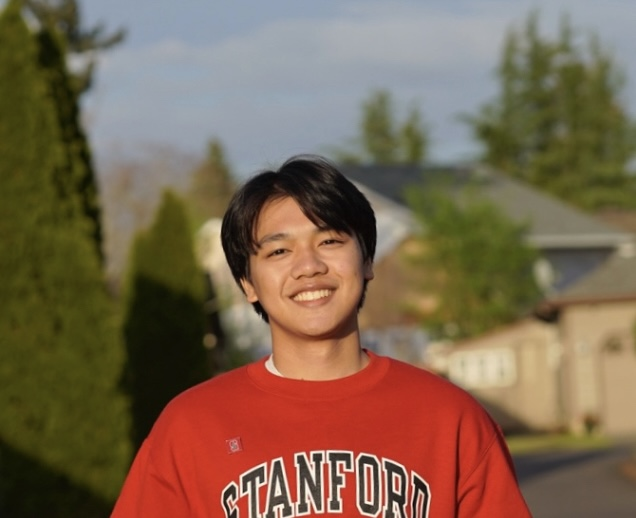

Built scalable analytics pipelines and machine learning models to guide nonprofit decision-making.
Designed a charitable giving index and an LLM architecture to predict donor and nonprofit engagement trends.
Developed a public transportation safety app used by 2,000+ residents in Los Angeles, integrating real-time crime reports and partnering with city transit and cybersecurity teams.
Enhanced user safety, retention, and engagement through data-driven features and community collaboration.
Researched the ethical and creative dimensions of AI, publishing findings and building AI-powered interactive games.
Used generative AI tools like DALL·E and Midjourney to explore technology’s artistic and educational potential.